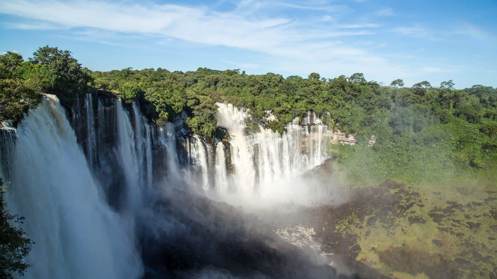

O território angolano era habitado por populações tradicionais. No ano de 1483, a chegada de navegadores portugueses iniciou o processo de colonização do país. Desse modo, Portugal dominou a área atual de Angola por um sistema de colonização baseado principalmente no comércio de escravizados, sendo que muito deles eram negociados e transportados para o Brasil. O comércio de escravizados foi extremamente lucrativo para os portugueses e foi cessado com a promulgação da Lei Áurea no Brasil. Em 1961, após anos de colonização portuguesa, os angolanos se organizaram em movimentos independentistas e realizaram diversas revoltas contra o domínio de Portugal. O referido cenário culminou na independência de Angola no ano de 1975. No entanto, as profundas diferenças políticas entre os grupos que lutaram pela independência angolana resultaram em uma longa guerra civil, que terminou somente no ano de 2002.
A Angola apresenta uma grande riqueza cultural derivada das diversas etnias que compõem a sua população. Cada uma delas possui um conjunto de costumes e tradições próprio que contribui para a formação do quadro nacional. O país reúne a segunda maior população falante de português do mundo, atrás apenas do Brasil, mas diversas outras línguas são faladas no território angolano, como kimbundu, umbundu, fiote, nhanheca, kikongu, tchokwe e kwanyama. Além das celebrações tradicionais de cada uma das etnias do país, existem algumas festas realizadas anualmente que envolvem toda a nação e atraem pessoas de todos os lugares, como o Carnaval, destacando-se o realizado em Luanda, e a Festa da Nossa Senhora da Muxima em Kissama, onde se localiza o seu santuário. O artesanato é um elemento típico da cultura angolana, assim como os mais diversos estilos musicais e de dança, antigos e recentes, que expressam a pluralidade cultural do país, sendo alguns deles: semba, rebita, cabetula, kuduro, zouk e kizomba. A culinária angolana utiliza ingredientes tropicais e típicos da região, recebendo ainda um pouco da influência portuguesa. O funge é um dos pratos tradicionais da Angola, comparado muitas vezes a um pirão, e é feito à base de mandioca ou milho, variando regionalmente. Dentre seus acompanhamentos está o calulu, à base de carne vermelha ou peixe, e outros ingredientes.
A economia angolana é a nona maior da África, com um PIB de quase 75 bilhões de dólares, embora esse valor não reflita as condições socioeconômicas do país, que é considerado uma nação emergente e possui 32,3% de sua população vivendo abaixo da linha da pobreza. O PIB per capita nacional é baixo — de 2280 dólares, segundo o Fundo Monetário Internacional (FMI). A longa guerra civil angolana, ao lado de fatores estruturais históricos, contribuíram para a fragilização da economia interna. Membro da Organização dos Países Exportadores de Petróleo (Opep), a economia da Angola é altamente dependente da exploração e comercialização do petróleo. Essas atividades contribuem com quase metade do PIB do país e representam 90% das exportações angolanas. Os principais destinos são a China, Índia, Emirados Árabes Unidos, Portugal e Espanha. Além do petróleo, outras riquezas naturais são importantes para o comércio exterior do país, como os diamantes. A indústria é o setor preponderante da economia angolana, com destaque para a mineração, as indústrias petroquímica, têxtil, de reparo de navios, do tabaco e o processamento de alimentos. A produção agropecuária, em contrapartida, é de extrema importância para o país, pois, além de fornecer alimentos para a população, concentra 85% de toda a mão de obra da Angola. Entre os principais cultivos desenvolvidos no país estãO:
O clima tropical é predominante na Angola. Há, entretanto, uma diferença significativa entre as condições climáticas ao norte e ao sul, região essa próxima ao deserto da Namíbia, e também ao longo da costa, que dispõe de clima semiárido. Em geral, os verões são quentes e chuvosos, enquanto os invernos são mais frescos e secos. A temperatura anual média varia entre 19 °C e 26 °C, a depender da localidade, enquanto o volume acumulado de chuvas é de 1800 mm nas áreas mais setentrionais e de 300 mm ao sul e no litoral, especialmente na faixa que se estende do sul até a capital.
